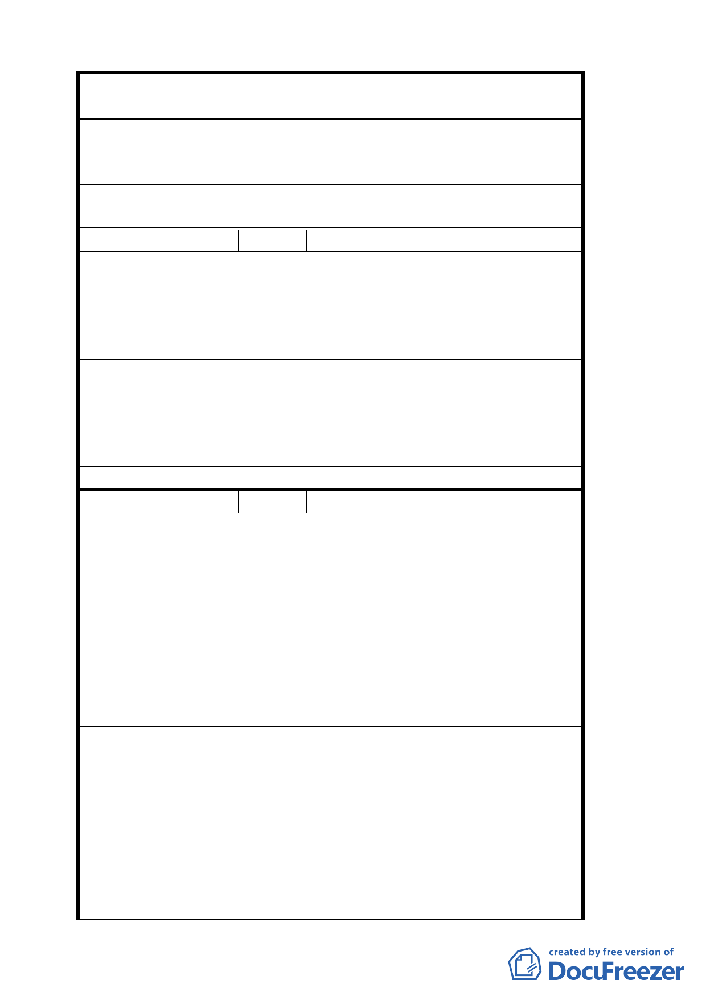

案 名 變更臺北市文山區指南里、老泉里部分保護區為休閒
產業特定專用區都市計畫案
專案小組審
查結論
1. 休閒產業特定專用區內既有合法建築之申請基地面
積修正為 1000 平方公尺。
2. 有關步道建設請交通局、建設局參考辦理。
委員會決議
專案小組審查結論中「休閒產業特定專用區」乙詞修
正為「本計畫範圍」，其餘同審查結論。
編 號 ７ 陳情人 張明貴
陳情理由
土地標示：文山區草湳段三小段 545 地號
本地區土地權屬祖產多人共有不容易組合
貓空地區之市有土地可否有條件的開放給當地居民承
建 議 辦 法 租。
本計畫案建議以市地重劃方式辦理。
1. 有關市有土地開放承租由於事涉土地法第 25 條公
專案小組審
查結論
有土地承租相關規定，非屬都市計畫範疇，請另洽
市府相關單位。
2. 本案由於係屬山坡地保護區，可建築土地有限，依
法不宜採用重劃方式辦理。
委 員會決 議 同專案小組審查結論。
編 號 ８ 陳情人 文山區木柵觀光茶園社區發展協會
1. 該方案劃設之休閒產業特定區範圍多屬世代務農
之居民，其所屬土地，多為農業使用，為保存當地
特色，鼓勵農民持續務農，希望方案能兼顧優惠農
民政策《農業用地之免徵》土地稅法實行，保障當
陳情理由
地農民權益。
2. 休閒產業應提供更多戶外設施空間，設置涼亭，不
開發土方，既兼顧環保且美化景觀，設置比例不超
過基地面積百分之十，應屬合理。
3. 指南里居民皆為茶農及筍農，經濟能力有限，無法
於兩年內 支付龐大的建築費用。
1. 變更內容未載明土地稅法。比照＜農業用地之免徵
＞條款辦理。
2. 土地使用分區管制第六點涼亭設置要點，總面積不
得超過 150 平方公尺部份。希望以申請建築基地面
建 議 辦 法 積方式辦理，總面積不得超過基地面積百分之十。
3. 開發許可規範原則第六點有關公告實施後之既有
不符本計畫土地使用分區管制之建築，應於公告實
施後兩年內完成申請建築核准。希望新增建物新地
新建者不在此限。
七